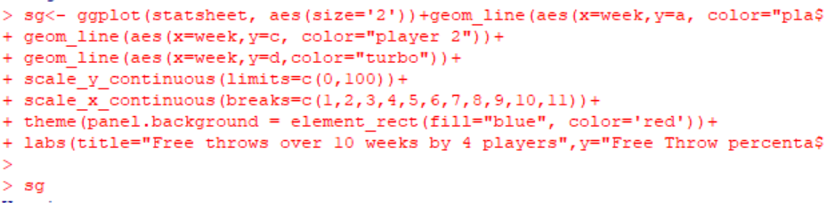
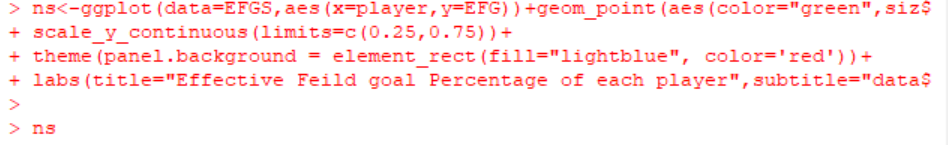

Data Visualization with ggplot2

Created by Nihar
How to Create a line Graph using ggplot2
First a Dataset must be loaded into R to graph
Then Using the data call the ggplot() function
The first argument of this function should be the dat a that you would like to use
Then you add another function to the line of code for a line graph this must be +geom_line()
In this function the arguments should be aes() which you put the x and y value into
after that you have a very simple line graph that will show the relation between two variables
Sample code of a line graph

How to make a scatterplot
For a scaterplot the process is very similar
Complete the first steps for a line graph but instead of adding the function +geom_line add +geom_point
Then With both of these graphs you can add aesthetics and labels
to add labels the function is +labs() in here you can add a title and subtitle and axis labels
You can also change the spacing and scale of the x and y axis with other functions
Graphs can be easily changed and customized with ggplot2
Sample code of a Scatterplot
